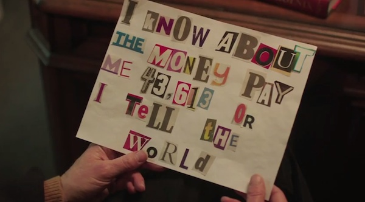

On YouTube you see “Supercuts” where every occurrence of a fictional character from a TV show or movie saying his catchphrase, (say, “wubba-lubba-dub-dub”) is compressed into a single compilation. We were particularly inspired by this one:
Rather than doing this by hand, we propose searching for the time-ranges when those phrases occur.
Then our code returns a new video with only those phrases. All other phrases are “cropped out”.
main.py, when run, takes an .mp4 video and its corresponding .srt file and performs one of the following three functions:
It then outputs the resultant "supercut" video to /out/FILENAME.mp4
Consider the example of calling python main.py --phrase 1 america.
In this case we have chosen the input files to be 1.mp4 and 1.srt. The video happens to be Obama's address about the recent terrorist attacks in San Bernardino.
We could have chosen to include phrases that include any of arbitrarily large set of words. For example, python main.py --phrase 1 code is good would return all clips that include at least one of the three words. However we find the result to be more fun when we choose one particular word - in this case, "America".
Here we call python main.py --word 1 america.
To isolate the words we used heuristic methods to ascertain when exactly Obama says the word "America" during the phrase. By doing so we can create a possibly more interesting supercut by eliminating the context and focusing on the way that the words are spoken.
Once we have clips of individual words, we are able to compose sentences that the people in the video never actually said.
Much like letters made from magazine clippings, it's not exactly convincing but a novel way to communicate nonetheless.
We now call python main.py --speech 1 american ideals are stronger than violence.